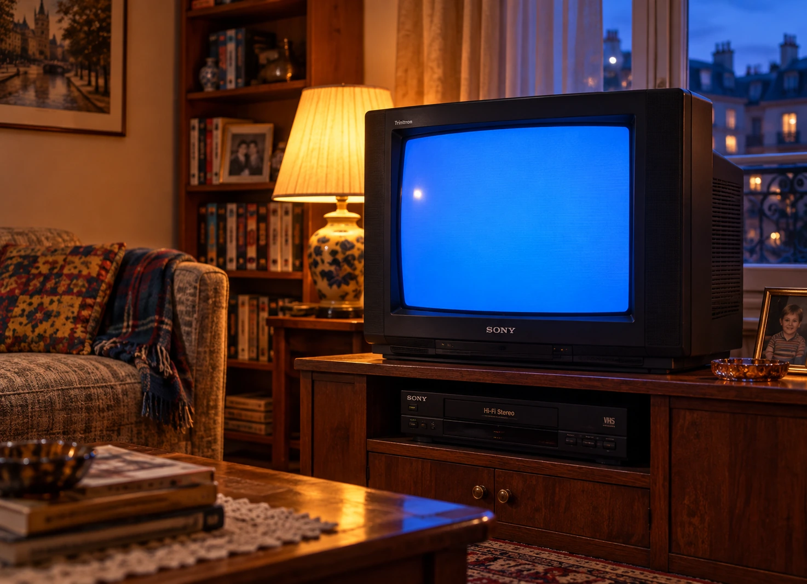
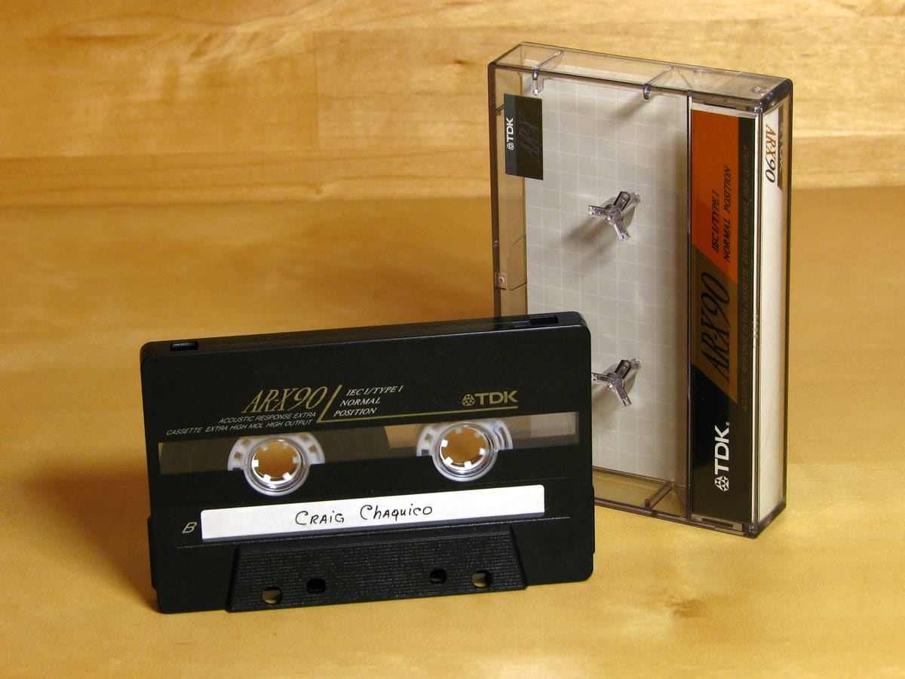

Le mercredi après-midi
Jeux, dessins animés, copains et liberté.
Explorer la collectionLes émissions, les jeux et les petits rituels qui nous rassemblent encore.

 Le générique du Club Dorothée
Le générique du Club DorothéeDes moments simples, des objets cultes, des habitudes inoubliables. Il suffit parfois d’une image.
Jeux, dessins animés, copains et liberté.
Explorer la collection
Choisir, hésiter, repartir avec des étoiles plein la tête.
Explorer la collection
Un petit réconfort après l’école. Tout un rituel.
Explorer la collectionLes consoles, les parties à deux, et ce mercredi qu’on n’a pas vu passer.
Explorer le dossierLa DeLorean, le bal et cette envie de remonter le temps.
Explorer le dossierLe grand écran, la cassette, la première fois : retourne sur l’île.
Explorer le dossierDu jeu, du son, du hasard. Et cette fameuse dernière partie qui n’est jamais la dernière.

Snake, Pong, Simon, Casse-briques… Joue tout de suite et tente de battre ton record.
À toi de jouer
Eurodance, rap français, slows de boum : choisis ta K7. On a gardé une place pour ton refrain.
Choisir ma cassette
Pas de programme, pas de recherche. Un souvenir au hasard, et on voit où il nous emmène.
Photos d’objets : crédits et licences sur la page des images.
Trois boutons, un petit écran et une créature qui n’avait visiblement pas consulté ton emploi du temps. Retour sur le plus exigeant des porte-clés.
Lire le dossierUn disque noir, un démarrage qui résonne encore et une carte mémoire qu’il ne fallait surtout pas perdre. La PlayStation a changé nos mercredis.
Lire le dossierIl suffisait de quelques notes pour que le salon change de programme. Dessins animés, chansons, copains de télévision : retour sur un rendez-vous à part.
Lire le dossierRETOUR90 est imaginé par Aymeric Deschard. Des archives, des objets identifiés et une place pour tes propres souvenirs.
Les vidéos sont lues dans les lecteurs officiels des plateformes qui les diffusent. Les noms des diffuseurs et des liens vers les vidéos sont indiqués. Les scènes créées pour l’ambiance du site sont signalées comme reconstituées.
Tu peux explorer les dossiers, regarder les vidéos et jouer sans compte. Tes favoris et tes scores restent dans ton navigateur. L’inscription par email au Club sert à recevoir les nouvelles.
Bien sûr. Un film de 1985 pouvait être notre VHS préférée en 1994. Nous distinguons la date d’origine et la période du souvenir, sans tout faire rentrer de force dans une seule décennie.